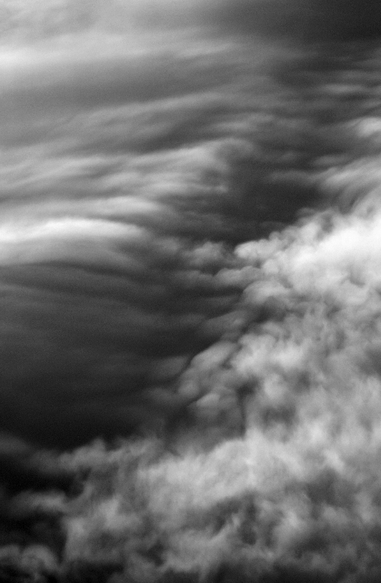
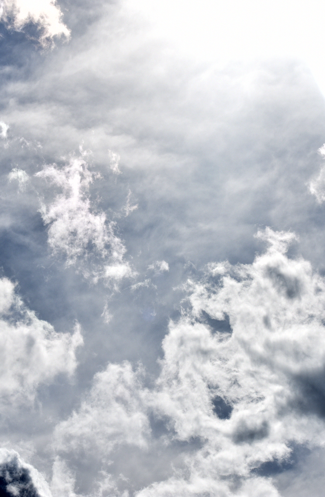
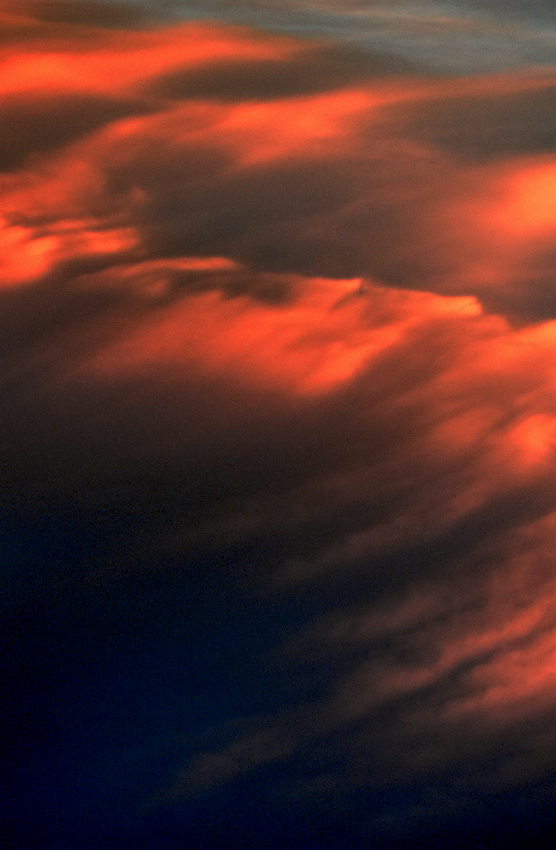
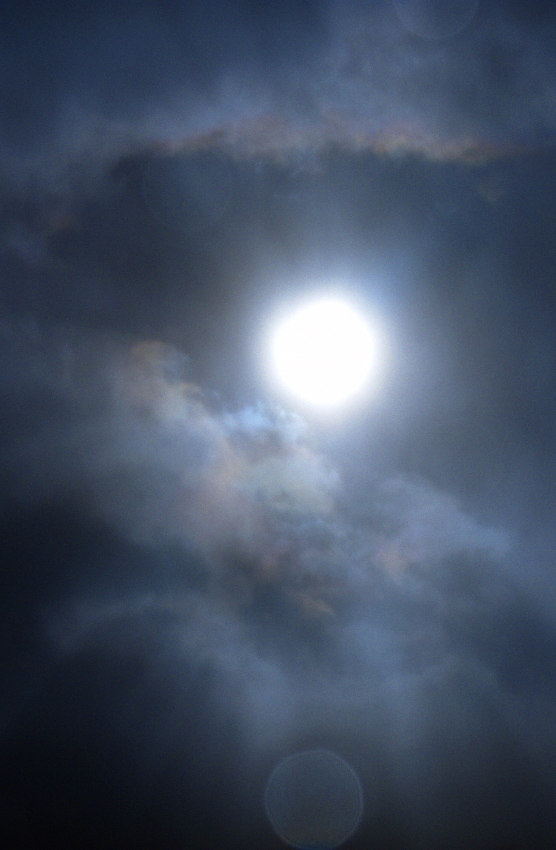
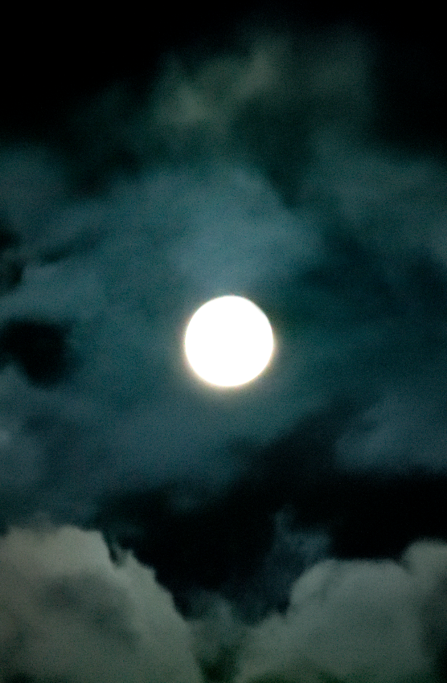

The Clouds project is a long term, personal project that I began as an effort to remind myself of what I believe is the core fundamental of photography: to decisively grab a piece of what becomes immediate history in a dynamic and often non-cooperative environment. The very subject is a chaotic and ever-changing form that, once gone, you may never see anything like it again, no matter how hard you look. It is a meditative practice to remain in touch with a part of the natural world around us, which I continually believe is something that I, and many humans, are becoming increasingly disconnected with, and it is an opportunity to allow my mind to think in an abstract manner; to see forms which may be lost on others, to encourage viewers to think about what they see and feel in these pictures, and to capture the unexpected beauty of a natural process many might consider to be mundane at a first glance.

Stairway

Bliss

Waves

Judgement

Midnight Sun
Severance